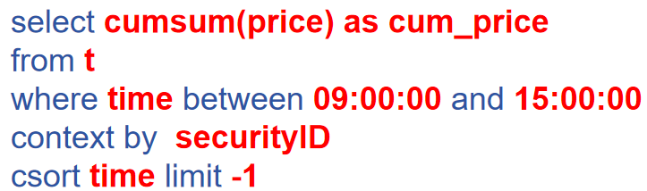
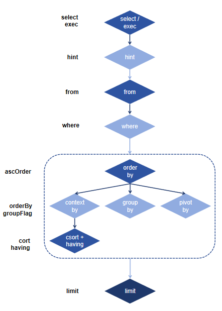

基于宏变量的元编程
元编程（Metaprogramming）指在程序运行时操作或者创建程序的一种编程技术，简而言之就是使用代码编写代码。通过元编程将原本静态的代码通过动态的脚本生成，使程序员可以创建更加灵活的代码以提升编程效率。
在 DolphinDB 中，元编程常用于 SQL 语句的编写。通过 SQL 元编程，可以解决下述2个场景的问题：
- 场景一：SQL 的字段名或过滤条件等是动态的，需要通过函数参数或变量进行传递。例如，用户报表系统，由前端用户选择查询字段，后端生成 SQL 查出数据。
- 场景二：查询列数非常多的宽表中的多个字段列，或者对普通表中多个字段执行相似的操作（例如同时对多个字段求和），如果完全通过脚本书写SQL语句，脚本冗长且耗时。
本教程将围绕 SQL 元编程展开，通过与传统的函数式元编程对比，介绍 V3.00.0 / 2.00.12 版本支持的更高效简洁的元编程方法——基于宏变量的元编程。
1. 基于函数的元编程
基于函数的元编程实现，是指通过内置元编程函数的组合调用生成元代码。以 select 查询语句为例，一个 select 语句通常可以拆分为以下几个部分：select 查询主体，表对象，分组字段，排序字段，过滤条件，返回记录数约束等（参考下图标红部分）。
为了适用于各种 SQL 语句的生成，DolphinDB 设计了用于 SQL 语句的组装的函数 sql（select 语句）， sqlUpdate（update 语句）， sqlDelete（delete 语句），或者也可以通过 parseExpr + SQL 字符串生成 SQL 元代码。
以 sql 函数为例，其语法为：
sql(select, from, [where], [groupBy], [groupFlag], [csort], [ascSort], [having], [orderBy], [ascOrder], [limit], [hint], [exec=false])sql 函数的每个参数都对应 SQL 的一个子句，通过变量传入即可动态生成对应的 SQL 元代码。
例如，上图的语句可以通过下述元编程脚本生成：
sel=sqlColAlias(makeUnifiedCall(cumsum, sqlCol("price")), "cum_price")
fm="t"
wre=parseExpr("time between 09:00:00 and 15:00:00")
ctxBy=sqlCol("securityID")
cs=sqlCol("time")
lim=-1
sql(select=sel, from=fm, where=wre, groupby=ctxBy, groupFlag=0, csort=cs, limit=lim)
// output:
< select cumsum(price) as cum_price from objByName("t") where time between pair(09:00:00, 15:00:00) context by securityID csort time asc limit -1 >参考以上例子，可以总结出 sql 函数生成元代码的规则：
- 查询字段须以 sqlCol 或者 sqlColAlias 声明。
- 对表字段计算的元代码：
- 单字段参与计算：sqlCol 函数指定 func 参数。
- 多字段参与计算：sqlColAlias 函数 搭配 makeCall 或者 makeUnifiedCall 函数。
- 表对象可以是一个表变量名字符串、表变量如 t 或 loadTable 返回的句柄。
具体的参数说明请参考：sql
sql 函数生成的元代码是基于一些小的元代码片段组装的，为了进一步理解这个规则，下面介绍一下组装涉及到的相关函数及其作用：
sqlCol：支持生成单字段或多字段应用同一函数的表达式，支持指定别名；生成的表达式形如：
(1) sqlCol("col") --> <col> (2) sqlCol(["col0","col1","col2"]) --> [<col0>, <col1>, …, <colN>] (3) sqlCol("col", func=sum, alias="newCol") --> <sum(col) as newCol> (4) sqlCol(["col0","col1","col2"], func=sum, alias=["newCol0","newCol1","newCol2"]) --> [<sum(col0) as newCol0>, <sum(col1) as newCol1>, <sum(col2) as newCol2>]sqlColAlias：为复杂的列字段计算元代码指定别名；生成的表达式形如：
(1) sqlColAlias(sqlCol("col"), "newCol") --> <col as newCol> (2) sqlColAlias(makeCall(sum, sqlCol("col")), "newCol") --> <func(col) as newCol> (3) sqlColAlias(makeCall(corr, sqlCol("col0"), sqlCol("col1")), "newCol") --> <func(col1, col2, …, colN) as newCol>通常搭配下述函数使用：
- makeCall, makeUnifiedCall: 用于生成 <func(cols.., args…)> 的元代码表达式。
- expr, unifiedExpr, binaryExpr：生成多元算术表达式，例如 <a+b+c>, <a1*b1+a2*b2+… +an*bn>
parseExpr：从字符串生成元代码，将拼接、 API 上传或脚本读取的字符串，生成可执行的脚本。例如 parseExpr(“select * from t”) 即可生成 <select * from t> 的元代码；parseExpr(“where vol>1000“) 生成 sql 函数 where 参数部分的元代码等。
以一个更复杂的场景为例：基于函数生成 select 部分的元代码 < nullFill(price, quantile(price, 0.5)) as price >，其中 price 是动态传入的一个字段名：
colName=`price
sqlColAlias(makeCall(nullFill, sqlCol(colName), makeUnifiedCall(quantile, (sqlCol(colName), 0.5))), colName)可以发现，这种基于函数的写法，需要嵌套多层函数才能实现，既复杂又不直观，对于初学者而言学习成本较高。为此， DolphinDB 于 2.00.12/3.00.0 版本推出了基于宏变量实现方法，以更直观的形式编写元代码。
2. 基于宏变量（Macro Variables）的元编程
与函数需要组装嵌套各个部分的元代码不同，基于宏变量的实现，以一种更直观的 <select statement> 方式生成元代码，其中 select statement 就是符合用户书写习惯的 select 语句，用户以宏变量的形式声明其中需要动态传入的字段。但需要明确的时，宏变量的内部实现也是基于函数的元编程方法。
注意：
- 目前仅支持生成SQL查询语句，暂不支持 update 和 delete 语句。
- 只能应用于列字段、字段别名、函数参数、表达式等，不能搭配 case when 子句、over 子句、from 嵌套查询等使用，例如
<select sum(_$$names2) from select _$$names1 from t>。 - 搭配 csort 和 order by 子句时，只能使用单列宏变量，不能使用多列宏变量。
例如第一节介绍的 SQL 语句，可以通过宏变量的方式书写为：
col = "price"
cxtByCol = "SecurityID"
csCol = "time"
a = 09:00:00
b = 15:00:00
<select cumsum(_$col) from t where _$csCol between a and b context by _$cxtByCol csort _$csCol limit -1>根据传入的动态字段是标量还是向量，字段的宏变量可以分为单列宏变量（single-column macro variable）和多列宏变量（multi-column macro variable）。
单列宏变量通过 _$声明，例如 _$name；多列宏变量通过 _$$ 声明，例如 _$$names。其中 name（标量）和 names（向量）是一个外部定义的存储列名的变量名，必须是 STRING 类型，其指定的列名需要符合命名规范，即不能以数字或符号开头。
注意：为了能够在解析时与 cast 函数的符号 $ 进行区分，设计时特意在声明符中加入了特殊字符下划线。这和读取特殊列名时使用 _"colName" 的用法相似。
单列宏变量在查询语句中只能作为单字段或者一元函数的参数，例如：
t = table(`a`a`b as sym, 1 2 3 as val)
name="sym"
<select _$name from t>.eval()
name="val"
grp="sym"
alias="sum_val"
<select sum(_$name) as _$alias from t group by _$grp>.eval()多列宏变量在查询语句中有以下几个使用场景：
作为多个查询字段。此场景下，直接输出多个列。
t = table(`a`a`b as sym, 1 2 3 as val1, 2 3 4 as val2) names=["val1", "val2"] <select _$$names from t>.eval()多字段参与计算，即作为多元函数的参数。此场景下，多列宏变量相当于一个元组，元组的每个元素相当于一列。
alias = "rs_val" <select rowSum(_$$names) as _$alias from t>.eval()多字段一起调用同一个函数分别计算。此场景下，宏变量分别用于函数参数和多列输出的别名。作为函数参数时，多列宏变量相当于一个元组。作为别名时，宏变量指向的列名作为别名。
alias=["v1", "v2"] <select sum:V(_$$names) as _$$alias from t>.eval() <select cumsum(_$$names) as _$$alias from t>.eval()注意：
- 聚合函数sum后面用函数模式byColumn修饰，是因为希望对元组的每一个元素分别做聚合计算。
- 向量函数cumsum后面没有使用函数模式byColumn修饰，是因为内置的向量化函数，应用于一个等长的Vector组成的元组时，自动会将向量化应用于元组的每一个元素，并返回一个元组。
3. 字段序列（Column Series）在元编程中的应用
先来设想一个场景，假设有一个 1002 列的宽表，列字段为 sym, date, col000~col999。如果直接写 SQL 脚本取出 col000~col999 列，听起来是一个非常冗长的脚本，这种场景就非常适合用元编程去实现：
cols="col" + lpad(string(0..999), 3, "0")
<select _$$cols from t>为了进一步简化这个场景，DolphinDB 支持了字段序列（Column Series）的功能，符号为（…），上述脚本可以改写为：
<select col000...col999 from t>字段序列可以用于表示查询字段或者别名，使用时需要满足：字段名必须是”前缀+数字“的组合，语法为 colJ…colK。
其中：
- col 是列名前缀示意，列名需满足 [a-zA-Z_]{1,}[0-9]+。
- 数字 J~K 必须是连续的整数序列，abs(J-K) <= 32768。例如字段为 col1, col2, col3, col5，写为 col1…col5 就不符合要求。数字 J~K 可以是连续的整数，如 1,2,..,10,11,…,100,101,…；也可以是格式化后固定位数的整数，如 0001,0002,…,0010,0011,…,0100,0101,…。
字段序列支持直接用在 SQL 语句中作为查询的字段或者别名：
select col1 ... coln from t
select col1...col3 as nm1 ... nm3 from t在元编程中使用时，若列名满足条件，可以替代 “_$$names” 的写法：
names = [col1, col2, ..., coln]
<select _$$names from t>
<select col1 ... coln from t> 字段序列非常适合应用在多个相似列计算的场景，例如：通过 fixedLengthArrayVector 函数多列字段组合成数组向量：
select fixedLengthArrayVector(ask1...ask10) as askArray from t4. 场景案例
本节将结合具体的元编程场景案例，对比基于函数和基于宏变量的元编程编程实现，带大家深入了解元编程的编程思路。
4.1 计算最小二乘回归的残差
在以下场景中，计算最小二乘回归的残差，其中列字段动态传入。
以一个自定义的简单的表，先写出该逻辑的 SQL 实现，假设 y, x1, x2, x3 都是动态传入的字段：
// 模拟数据脚本
x1=1 3 5 7 11 16 23
x2=2 8 11 34 56 54 100
x3=8 12 81 223 501 699 521
y=0.1 4.2 5.6 8.8 22.1 35.6 77.2;
t = table(y, x1, x2, x3)
// 批计算 SQL 脚本示意
select ols(y, (x1, x2, x3), 1, 2).Residual as residual from t基于函数的元编程
基于函数方法的思路是先把嵌套函数做一个转换和拆分：
ols(y, (x1, x2, x3), 1, 2).Residual
-> 转换
at(ols(y, (x1, x2, x3), 1, 2), "Residual")
-> 拆分
(1) re = makeUnfiedCall(at, obj0)
(2) obj0 = (obj1, "Residual")
(3) obj1 = makeUnfiedCall(ols, obj2)
(4) obj2 = (y, (x1,x2,x3), 1, 2)需要注意，(x1, x2, x3) 在批处理中可以作为字段元组参与计算，但是在元编程中如果用元组封装字段元代码，会变成 (<x1>, <x2>, <x3>)，这会导致元代码无法解析。需要将 (x1, x2, x3) 改写为可以替代的矩阵的形式 matrix(x1, x2, x3)，因此上述对象可以进一步拆解：
(4) obj2 = (y, obj3, 1, 2)
(5) obj3 = makeUnifiedCall(matrix, [x1,x2,x3])将上述所有的表字段使用 sqlCol 嵌套，可以得到下述 select 片段的元代码：
y = "y"
x = `x1`x2`x3
residual = makeCall(member, makeCall(ols, sqlCol(y), makeUnifiedCall(matrix, sqlCol(x)), 1, 2), "Residual")
//output：< member(ols(y, matrix(x1, x2, x3), 1, 2), "Residual") >代入 sql 函数可以得到：
sql(select=sqlColAlias(residual, "residual"), from=t).eval()基于宏变量的元编程
基于宏变量的实现只需要改写批处理的 SQL 语句即可，即把所有表字段都用宏变量替代：
colName = "y"
x = `x1`x2`x3
<select ols(_$colName, _$$x, 1, 2).Residual as residual from t>.eval()
// 或者
<select ols(_$colName, x1...x3, 1, 2).Residual as residual from t>.eval()4.2 多个结构相同的列计算
假设有一个 102 列的表，字段为 sym, date, price1..price50, qty1..qty50, 假设 amount=qty*price，现需要分别计算出这 50 个 price 和 qty 列对应的 amount 字段。
// 模拟数据脚本
sym = ["a" + string(1..10)]
date = [take(2022.01.02, 10)]
price = table(rand(10.0, 500) $ 10:50).values()
qty = table(rand(1000, 500) $ 10:50).values()
data = (sym).appendTuple!(date).appendTuple!(price).appendTuple!(qty)
t=table(1:0, [`sym, `date] join priceCols join amountCols, [SYMBOL, DATE] join take(DOUBLE, 50) join take(INT, 50))
t.tableInsert(data)
// 批计算 SQL 脚本示意（中间省略部分）
select price1*qty1 as amount1, price2*qty2 as amount2 ... , price50*qty50 as amount50 from t基于函数的元编程
50 个列字段的形式都是 priceK * qtyK as amountK，此类二元计算很容易想到使用 expr 类的函数实现，其中二元表达式可以借助 binaryExpr 生成，而 as 别名部分则借助 sqlColias 生成，得到的 select 片段的脚本如下：
priceCols = "price" + string(1..50)
qtyCols = "qty" + string(1..50)
amountCols="amount"+string(1..50)
slt=sqlColAlias(binaryExpr(sqlCol(priceCols), sqlCol(qtyCols), *), amountCols)最终生成 SQL 脚本的代码如下：
sql(select=slt, from=t).eval()基于宏变量的元编程
同样基于宏变量的实现只需要改写批处理的 SQL 语句即可：
priceCols = "price" + string(1..50)
qtyCols = "qty" + string(1..50)
amountCols="amount"+string(1..50)
<select _$$priceCols * _$$qtyCols as _$$amountCols from t>.eval()也可以用字段序列声明别名：
<select _$$priceCols * _$$qtyCols as askAmount1...askAmount50 from t>.eval()如果字段是固定不变的，利用向量乘法是两两相乘的规律，也可以通过字段序列直接编写 SQL 脚本：
select (price1...price50) * (qty1...qty50) as amount1...amount50 from t4.3 多列计算返回一个结果列
假设有一个 10 列的表，要计算所有列的加权平均和，如果用批计算的 SQL，脚本如下所示：
// 模拟数据脚本
t = table(rand(10.0, 100) $ 10:10).rename!("val" + string(1..10))
// 批计算 SQL 脚本示意（中间省略部分）
select *, val1*0.1 + val2*0.2 + val3*0.3 +...+val10*1.0 from t基于函数的元编程
第一步还是先基于批计算的表达式进行拆解：
将 val1*0.1 + val2*0.2 + val3*0.3 +...+val10*1.0 拆分为两部分：
objk = valk * Wk
re = obj1 + obj2 + … +obj10
参照例 2，其中 objk 是二元表达式，可以使用 binaryExpr 生成，re 相加部分则可以借助函数 unifiedExpr 实现。同样，元代码中列字段用 sqlCol 声明，则最后编写的脚本如下：
t = table(rand(10.0, 100) $ 10:10).rename!("val" + string(1..10))
cols = "val"+string(1..10)
w = (1..10) \ 10 $ ANY
slt = sqlColAlias(unifiedExpr(binaryExpr(sqlCol(cols), w, *), take(+,cols.size()-1)),"weightedVal")
sql(select=[sqlCol("*"), slt], from=t).eval()需要注意，此处的权重 w 需声明为元组，否则会作为向量和每一列相乘。
基于宏变量的元编程
该场景下直接通过改写 SQL 脚本并不能降低脚本的复杂度，我们转换 SQL 逻辑进行改写：先一起计算出 val * w 的部分，再求和，即：
select *, rowSum(val1...val10 * w) as weightedVal from t使用元编程可以写为：
cols = "val"+string(1..10)
w = (1..10) \ 10 $ ANY
<select *, rowSum(_$$cols * w) as weightedVal from t>.eval()4.4 where 多条件
筛选出某表中属于新能源或光伏类别的 val 字段：
// 模拟数据脚本
t = table(["新能源01", "新能源02", "电力01"] as flagName, 1 2 3 as val)
// 批计算 SQL 脚本
select val from t where flagName like "%新能源%" or flagName like "%光伏%"基于函数的元编程
单个过滤条件 flagName like pattern 可以借助 makeCall/makeUnifiedCall 调用 like 函数实现。
由于过滤条件是动态的且可能不止一个，此时就可以借助 each 系列的高阶函数（each/eachRight/eachLeft）遍历生成多个条件子句，多个子句则可以使用 rowOr 函数进行连接。最终自定义一个用于生成 where 条件的匿名函数（其中 :R 是 eachRight 的模式表示）：
def(col, pattern){return rowOr(like:R(col,pattern))}完整的元编程脚本如下：
pattern = ["%新能源%", "%光伏%"]
col= "flagName"
whereCond=makeCall(def(col, pattern){return rowOr(like:R(col,pattern))}, sqlCol(col), pattern)
sql(select=sqlCol("val"), from=t, where=whereCond).eval()基于宏变量的元编程
宏变量方法也需要基于自定义函数去实现：
val="val"
flag="flagName"
def filter(col, pattern){return rowOr(like:R(col,pattern))}
<select _$val from t where filter(_$flag,["%新能源%", "%光伏%"])>.eval()某些特别复杂的场景下，无法使用宏变量去编写 SQL 元代码，此时只能使用基于函数的方法生成。
4.5 每行记录按存储的计算代码（string）进行计算
假设某表有 3 列，前两列为数值列，第三列为字符串列存储计算指标，要求前两列作为参数，带入第三列计算指标列进行计算。
t = table(1 1.1 1.3 1.4 1.5 1.7 as a,0.2 0.2 0.2 0.2 0.2 0.2 as b,["iif(a>1,min(a-1,b),0)","iif(a>1,min(a-2,b),0)","iif(a>1,min(a-3,b),0)","iif(a>1,min(a-4,b),0)","iif(a>1,min(a-5,b),0)","iif(a>1,min(a-6,b),0)"] as v)通过字符串生成计算代码，可以联想到元编程函数 parseExpr，且 parseExpr 支持指定 varDict 参数，支持计算的指标的参数值以字典形式传入赋值。以第一行计算为例，可以写为：
parseExpr("iif(a>1,min(a-1,b),0)", {a:1.0, b:0.2}).eval()由于每行具有不同的指标，使用 each 函数遍历每行记录，最后将计算结果拼接即可。实现的代码如下：
each(def(mutable d)->parseExpr(d.v, d.erase!(`v)).eval(), t)注意：由于表的每一行都是一个字典，d.erase!(`v) 表示删除 v 字段后，就能得到 a, b 的赋值字典。
5. 总结
再回到开头提出的两个元编程场景：
- 场景一：SQL 的字段名或过滤条件等是动态的，需要通过函数参数或变量进行传递。
- 场景二：查询大宽表中的多个字段列，或者对普通表中多个字段执行相似的操作。
结合上述的案例的学习，对于上述场景的解决方案，可以做出如下总结：
- 对于场景一，字段动态传入，必须使用元编程实现，此时首选基于宏变量的元编程，因为这种方式更加简单，脚本可读性也更高。
- 对于场景二，若字段固定，则直接用字段序列书写 SQL 脚本即可，无需再通过元编程去实现。